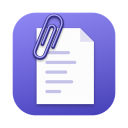

Privacy Policy · 최종 수정 / Last updated: 2026-09-30
Pastense는 어떤 개인정보도 수집·저장·전송하지 않습니다.
없습니다. 앱에는 분석 도구, 광고 SDK, 오류 보고, 사용자 추적 코드가 없고 계정이나 로그인도 없습니다.
복사한 텍스트, 링크, 이미지, 파일 경로는 사용자의 Mac 안(앱 샌드박스 컨테이너)에만 저장되며 외부로 전송되지 않습니다. 설정에서 언제든 전체를 삭제할 수 있고, 앱을 삭제하면 함께 삭제됩니다. 비밀번호 관리자가 숨김(concealed)으로 표시한 클립보드 항목은 기록하지 않습니다.
복사한 항목이 웹 링크일 때 미리보기(제목·대표 이미지)를 보여 주기 위해 해당 웹사이트에 직접 접속해 페이지 정보를 받아옵니다. 이 요청은 사용자의 Mac에서 그 사이트로만 가며, 개발자를 포함한 제3자 서버를 거치지 않습니다. 그 외에는 인터넷을 사용하지 않습니다.
cozycat-studio@naver.com
Pastense does not collect, store, or transmit any personal data.
None. The app contains no analytics, advertising SDKs, crash reporting, or tracking code, and it has no accounts or sign-in.
Copied text, links, images, and file paths are stored only on your Mac, inside the app's sandbox container, and are never sent anywhere. You can delete all of it from Settings at any time; uninstalling the app removes it as well. Clipboard items that password managers mark as concealed are not recorded.
When a copied item is a web link, Pastense contacts that website directly to fetch the page title and image for the preview. The request goes from your Mac to that site only and never passes through the developer's or any third-party server. The app uses the internet for nothing else.
cozycat-studio@naver.com